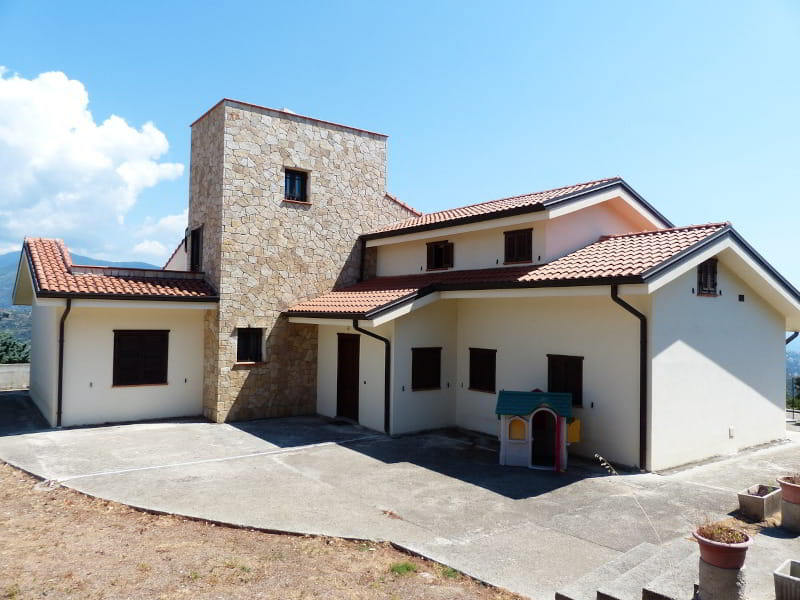
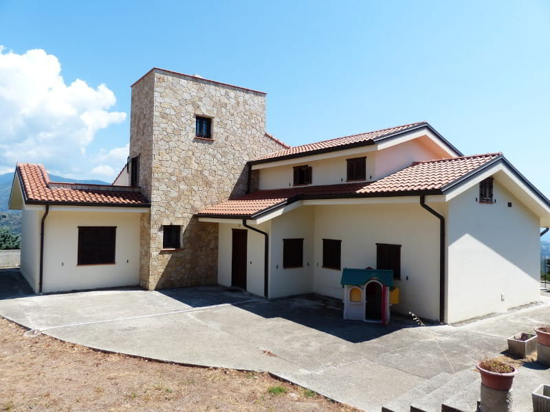
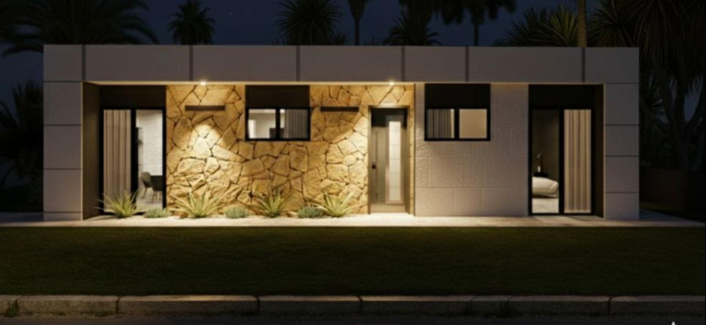
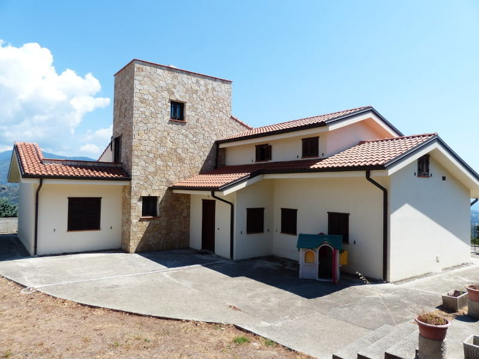

Проекты
Посмотрите образцы наших проектов
 



Выберите оптимальный вариант строительства дома: каркасные дома с клееным брусом или сэндвич-панели Thermochip
Получить консультацию Каркасное строительство в Испании набирает популярность благодаря прочности, экологичности и хорошей теплоизоляции деревянных конструкций. Клееный брус из шведской ели (GL-24) обладает рядом преимуществ:
Сэндвич-панели Thermochip — это современный и высокоэффективный материал для строительства, который сочетает в себе отличные теплоизоляционные и гидроизоляционные свойства.
| Характеристика | Каркасная технология (клееный брус) | Сэндвич-панели Thermochip |
|---|---|---|
| Энергоэффективность | Хорошая теплоизоляция, но требует обработки | Отличная теплоизоляция, снижает расходы на кондиционирование |
| Пожарная безопасность | Хорошая, древесина обгорает медленно | Хорошая, панели имеют огнеупорные свойства |
| Влагоустойчивость | Требует обработки для защиты от влаги | Отличная защита от влаги, идеальна для прибрежных районов |
| Скорость строительства | Занимает больше времени на монтаж | Быстрая сборка, экономия времени |
| Стоимость | Дорогая, зависит от качества древесины | Более доступная стоимость и лёгкость монтажа |
Выбор между каркасным домом и сэндвич-панелями зависит от ваших предпочтений, бюджета и климатических условий региона. Каркасные дома подходят для холодного климата, сэндвич-панели — для жарких и прибрежных районов Испании.
Посмотрите образцы наших проектов

Отдел продаж
Телефон: +34 604 158 859
Email: o.czernyszenko@gmail.com